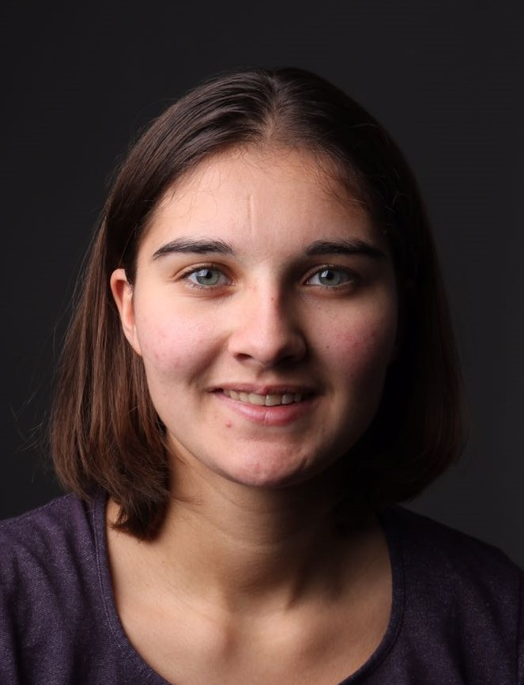

Mijn naam is Charlotte van Seventer, 19 jaar. Ik ben een doorzetter, creatief, enthousiast, leergierig en heb een brede interesse. Tijdens de studie ben ik mezelf constant aan het ontwikkelen om een goede Interaction designer, visuele designer of front-developer te worden. Ik probeer elke dag creatief bezig te zijn, daaruit is mijn hobby ook uit ontstaan, fotografie. Ik onthoud het liefst alles wat ik gezien en gemaakt heb. Hetzelfde geld ook voor leren en werken. Ik wil zoveel mogelijk leren en ervaring op doen, om mezelf weer te ontwikkelen. Ik werk hard om mijn doel te bereiken, ik houd daarom ook van uitdagingen. Tijdens het werken probeer ik zoveel mogelijk zelf te onderzoeken, ontwerpen en te bouwen. Elke dag kom ik nieuwe technieken tegen die ik zelf kan toepassen in mijn werken, waardoor mijn werk steeds beter wordt.
Ik verwacht dat we veel verschillende dingen gaan leren. Dat er verschillende nieuwe apparaten, onderwerpen en programma's worden geintroducteerd. In deze weken verwacht ik informatie over verschillende onderwerpen en hoe je die kan toepassen in je werk. Tijdens de lapweken hoop ik dat we meer gaan leren programmeren. Dit vak zal zich meer richten op technien, zoals werken met een Arduino.
Deze periode zou ik graag mezelf meer willen gaan ontwikkelen met het programmeren. Het programmeren spreekt mij er veel aan omdat je verschillende dingen ermee kan bouwen. Tijdens de CMD opleiding richten we ons meer op het designen en onderzoeken, waardoor het programmeren niet zoveel meer aan bod komt. In deze tien weken zal ik graag verschillende kanten van de techniek willen zien. Ik zou graag willen leren werken met een Arduino en met VR. Ik wil graag meer gaan ontdekken dat met techniek gedaan kan worden.